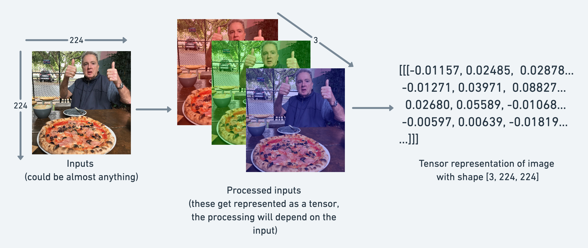

0 基础⚓︎
什么是 PyTorch？⚓︎
PyTorch 是一个开源的机器学习和深度学习框架。
PyTorch 可用于什么？⚓︎
PyTorch 允许您使用 Python 代码操作和处理数据，编写机器学习算法。
谁在使用 PyTorch？⚓︎
许多世界上最大的技术公司，如 Meta（Facebook）、Tesla 和 Microsoft，以及人工智能研究公司，如 OpenAI 使用 PyTorch 来推动研究并将机器学习引入他们的产品。

例如，特斯拉的人工智能负责人 Andrej Karpathy 曾多次发表演讲（PyTorch DevCon 2019、特斯拉 AI Day 2021），介绍了特斯拉如何使用 PyTorch 来驱动他们的自动驾驶计算机视觉模型。
PyTorch 也在其他行业中使用，比如在农业中用于 驱动拖拉机上的计算机视觉。
为什么使用 PyTorch？⚓︎
机器学习研究人员喜欢使用 PyTorch。截至 2022 年 2 月，PyTorch 是 Papers With Code 上使用最多的深度学习框架，这是一个用于跟踪机器学习研究论文和附带代码存储库的网站。
PyTorch 还能够在幕后处理许多事情，如 GPU 加速（使您的代码运行更快）。
因此，您可以专注于处理数据和编写算法，而 PyTorch 将确保它运行得很快。
如果像特斯拉和 Meta（Facebook）这样的公司使用它来构建部署在数百个应用程序上、驾驶数千辆汽车并向数十亿人提供内容的模型，那么它在开发方面显然也是有能力的。
这一章内容⚓︎
讲解机器学习和深度学习的基本构建块，即张量。
具体来说，将涵盖以下内容：
| 主题 | 内容 |
|---|---|
| 张量简介 | 张量是所有机器学习和深度学习的基本构建块。 |
| 创建张量 | 张量可以表示几乎任何类型的数据（图像、单词、数字表格）。 |
| 从张量中获取信息 | 如果您可以将信息放入张量，那么您也会想要将它取出。 |
| 操作张量 | 机器学习算法（如神经网络）涉及以许多不同的方式操作张量，如加法、乘法、组合等。 |
| 处理张量形状 | 机器学习中最常见的问题之一是处理形状不匹配（尝试将错误形状的张量与其他张量混合）。 |
| 在张量上进行索引 | 如果您已经对 Python 列表或 NumPy 数组进行了索引，那么与张量非常相似，只是它们可以具有更多的维度。 |
| 混合使用 PyTorch 张量和 NumPy | PyTorch 处理张量（torch.Tensor），NumPy 喜欢数组（np.ndarray），有时您会希望混合和匹配它们。 |
| 可重复性 | 机器学习是非常实验性的，因为它使用了大量的随机性，有时您希望这种随机性不那么随机。 |
| 在 GPU 上运行张量 | GPU（图形处理单元）可以使您的代码运行更快，PyTorch 可以轻松地在 GPU 上运行您的代码。 |
导入 PyTorch⚓︎
注意： 在运行本笔记本中的任何代码之前，您应该已经完成了 PyTorch 设置步骤。
让我们从导入 PyTorch 并检查我们正在使用的版本开始。
import torch
torch.__version__
'1.13.1+cu116'
太棒了，看起来我们有 PyTorch 1.10.0+。
这意味着如果您正在学习这些材料，您将看到与 PyTorch 1.10.0+ 最兼容的情况，但是如果您的版本号远高于此，您可能会注意到一些不一致性。
如果您遇到任何问题，请在课程的 GitHub 讨论页面 上发帖。
张量简介⚓︎
现在我们已经导入了 PyTorch，是时候了解一下张量了。
张量是机器学习的基本构建块。
它们的任务是以数值方式表示数据。
例如，您可以将图像表示为形状为 [3, 224, 224] 的张量，其中 [颜色通道数，高度，宽度]，例如图像具有 3 个颜色通道（红色、绿色、蓝色），高度为 224 像素，宽度为 224 像素。

在张量术语（用于描述张量的语言）中，张量将具有三个维度，分别为 颜色通道数、高度 和 宽度。
但我们在提前预测。
让我们通过编码来了解更多关于张量的知识。
创建张量⚓︎
PyTorch 热爱张量。以至于有一个完整的文档页面专门介绍了 torch.Tensor 类。
你的第一个作业是阅读 10 分钟的 torch.Tensor 文档。但你可以稍后再去阅读。
让我们来写代码吧。
首先，我们要创建的是标量。
标量是一个单独的数字，在张量术语中，它是一个零维张量。
# 标量
scalar = torch.tensor(7)
scalar
tensor(7)
看到上面打印出 tensor(7) 吗？
这意味着虽然 scalar 是一个单独的数字，但它的类型是 torch.Tensor。
我们可以使用 ndim 属性来检查张量的维度。
scalar.ndim
0
如果我们想要从张量中获取数字，怎么办？
也就是说，将它从 torch.Tensor 转换为 Python 整数？
为了做到这一点，我们可以使用 item() 方法。
# 从张量中获取 Python 数字（仅适用于单元素张量）
scalar.item()
7
好的，现在让我们看一个向量。
向量是一个单维张量，但可以包含许多数字。
例如，您可以有一个向量 [3, 2] 来描述您家中的 [卧室数量，浴室数量]。或者您可以有 [3, 2, 2] 来描述您家中的 [卧室数量，浴室数量，停车位数量]。
这里的重要趋势是，向量在它可以表示的内容上是灵活的（张量也是如此）。
# 向量
vector = torch.tensor([7, 7])
vector
tensor([7, 7])
太棒了，vector 现在包含了两个 7，这是我的最爱。
你认为它会有多少维度呢？
# 检查 vector 的维度数
vector.ndim
1
嗯，这很奇怪，vector 包含两个数字，但只有一个维度。
我告诉你一个技巧。
您可以通过张量在 PyTorch 中的括号数量来判断它的维度，只需计算一侧即可。
vector 有多少个方括号？
另一个重要的概念是张量的 shape 属性。形状告诉您元素在其中如何排列。
让我们来查看 vector 的形状。
# 检查 vector 的形状
vector.shape
torch.Size([2])
上面的输出是 torch.Size([2])，这意味着我们的向量的形状是 [2]。这是因为我们将两个元素放在了方括号中（[7, 7]）。
现在让我们看一个矩阵。
# 矩阵
MATRIX = torch.tensor([[7, 8],
[9, 10]])
MATRIX
tensor([[ 7, 8],
[ 9, 10]])
哇哦！更多的数字！矩阵与向量一样灵活，只是它们有一个额外的维度。
# 检查维度数
MATRIX.ndim
2
MATRIX 有两个维度（你有没有数一数一侧外面的方括号？）。
你认为它会有什么 shape？
MATRIX.shape
torch.Size([2, 2])
我们得到的输出是 torch.Size([2, 2])，因为 MATRIX 有两个元素深度和两个元素宽度。
那我们来创建一个张量吧？
# 张量
TENSOR = torch.tensor([[[1, 2, 3],
[3, 6, 9],
[2, 4, 5]]])
TENSOR
tensor([[[1, 2, 3],
[3, 6, 9],
[2, 4, 5]]])
哇哦！多好看的张量。
我想强调的是，张量可以表示几乎任何东西。
我们刚刚创建的这个可以是牛排和杏仁酱店的销售数字（我最喜欢的两种食物）。

张量有多少个维度呢？（提示：使用方括号计数技巧）
# 检查 TENSOR 的维度数
TENSOR.ndim
3
它的形状是多少？
# 检查 TENSOR 的形状
TENSOR.shape
torch.Size([1, 3, 3])
好的，它输出了 torch.Size([1, 3, 3])。
维度是从外到内排列的。
这意味着有 1 个 3x3 的维度。

注意： 你可能会注意到我在
scalar和vector中使用小写字母，在MATRIX和TENSOR中使用大写字母。这是有意的。在实践中，标量和向量通常用小写字母表示，例如y或a。而矩阵和张量通常用大写字母表示，例如X或W。你还可能注意到矩阵和张量的名称可以互换使用。这是常见的。由于在 PyTorch 中通常处理
torch.Tensor（因此有张量名称），但其中的内容的形状和维度将决定它实际上是什么。
让我们总结一下。
| 名称 | 它是什么？ | 维度数 | 大写或小写（通常/示例） |
|---|---|---|---|
| 标量 | 一个单独的数字 | 0 | 小写（a） |
| 向量 | 有方向的数字（例如带有方向的风速），但也可以包含许多其他数字 | 1 | 小写（y） |
| 矩阵 | 数字的 2 维数组 | 2 | 大写（Q） |
| 张量 | 数字的 n 维数组 | 可以是任何数字，0 维张量是标量，1 维张量是向量 | 大写（X） |

随机张量⚓︎
我们已经确定张量表示某种形式的数据。
而机器学习模型，如神经网络，则操作并寻找张量中的模式。
但是在使用 PyTorch 构建机器学习模型时，你很少会手动创建张量（就像我们一直在做的那样）。
相反，机器学习模型通常以大型随机数张量开始，并在处理数据以更好地表示数据时调整这些随机数。
实质上：
从随机数开始 -> 查看数据 -> 更新随机数 -> 查看数据 -> 更新随机数...
作为数据科学家，你可以定义机器学习模型开始（初始化）、查看数据（表示）和更新（优化）其随机数的方式。
稍后我们将亲自动手操作这些步骤。
现在，让我们看看如何创建一个随机数张量。
我们可以使用 torch.rand() 并传递 size 参数来实现这一点。
# 创建一个大小为 (3, 4) 的随机数张量
random_tensor = torch.rand(size=(3, 4))
random_tensor, random_tensor.dtype
(tensor([[0.6541, 0.4807, 0.2162, 0.6168],
[0.4428, 0.6608, 0.6194, 0.8620],
[0.2795, 0.6055, 0.4958, 0.5483]]),
torch.float32)
torch.rand() 的灵活性在于我们可以调整 size 为任何我们想要的大小。
例如，假设你想要一个随机数张量，其形状为常见的图像形状 [224, 224, 3]（[高度，宽度，颜色通道]）。
# 创建一个大小为 (224, 224, 3) 的随机数张量
random_image_size_tensor = torch.rand(size=(224, 224, 3))
random_image_size_tensor.shape, random_image_size_tensor.ndim
(torch.Size([224, 224, 3]), 3)
零zeros和一ones⚓︎
有时你只想用零或一来填充张量。
这在掩码（例如，用零掩盖一个张量中的某些值，以通知模型不要学习它们）中经常发生。
让我们创建一个全零的张量，使用 torch.zeros()。
同样，size 参数发挥作用。
# 创建一个全零的张量
zeros = torch.zeros(size=(3, 4))
zeros, zeros.dtype
(tensor([[0., 0., 0., 0.],
[0., 0., 0., 0.],
[0., 0., 0., 0.]]),
torch.float32)
我们可以使用 torch.ones() 来创建一个全为一的张量。
# 创建一个全为一的张量
ones = torch.ones(size=(3, 4))
ones, ones.dtype
(tensor([[1., 1., 1., 1.],
[1., 1., 1., 1.],
[1., 1., 1., 1.]]),
torch.float32)
创建范围range和类似的张量tensors like⚓︎
有时你可能想要一系列数字，例如 1 到 10 或 0 到 100。
你可以使用 torch.arange(start, end, step) 来实现。
其中：
start= 范围的起始位置（例如 0）end= 范围的结束位置（例如 10）step= 每个值之间的步长（例如 1）
注意： 在 Python 中，你可以使用
range()来创建范围。但是在 PyTorch 中，torch.range()已被弃用，并且在未来可能会出现错误。
# 使用 torch.arange()，torch.range() 已被弃用
zero_to_ten_deprecated = torch.range(0, 10) # 注意：未来可能会出现错误
# 创建值从 0 到 10 的一系列值
zero_to_ten = torch.arange(start=0, end=10, step=1)
zero_to_ten
/tmp/ipykernel_3695928/193451495.py:2: UserWarning: torch.range is deprecated and will be removed in a future release because its behavior is inconsistent with Python's range builtin. Instead, use torch.arange, which produces values in [start, end).
zero_to_ten_deprecated = torch.range(0, 10) # Note: this may return an error in the future
tensor([0, 1, 2, 3, 4, 5, 6, 7, 8, 9])
有时你可能想要一个与另一个张量具有相同形状的相同类型的张量。
例如，一个张量的形状为 0 的全部零张量。
你可以使用 torch.zeros_like(input) 或 torch.ones_like(input) 来实现，它们分别返回一个以 input 的形状填充了零或一的张量。
# 也可以创建一个与另一个张量具有相同形状的全部零张量
ten_zeros = torch.zeros_like(input=zero_to_ten) # 形状相同
ten_zeros
tensor([0, 0, 0, 0, 0, 0, 0, 0, 0, 0])
张量数据类型⚓︎
PyTorch 中有许多不同的张量数据类型可用。
有些是特定于 CPU 的，有些对 GPU 更好。
了解哪种是哪种可能需要一些时间。
通常，如果在任何地方看到 torch.cuda，则表示张量正在用于 GPU（因为 Nvidia GPU 使用名为 CUDA 的计算工具包）。
最常见的类型（通常是默认的）是 torch.float32 或 torch.float。
这被称为 "32 位浮点"。
但还有 16 位浮点数（torch.float16 或 torch.half）和 64 位浮点数（torch.float64 或 torch.double）。
为了使事情变得更加混乱，还有 8 位、16 位、32 位和 64 位整数。
还有更多！
注意： 整数integer是一个数字，例如
7，而浮点数带有小数7.0。
这一切的原因都与计算中的精度有关。
精度是用于描述数字的详细程度。
精度值越高（8、16、32），描述数字的细节和数据越多。
在深度学习和数值计算中，这很重要，因为你正在执行如此多的操作，你拥有的细节越多，进行计算所需的计算量就越大。
因此，低精度数据类型通常计算速度更快，但在评估指标（计算速度更快但准确性较低）方面会牺牲一些性能。
资源：
- 请参阅PyTorch文档以获取所有可用张量数据类型的列表。
- 阅读维基百科页面，了解计算中的精度是什么。
让我们看看如何使用特定数据类型创建一些张量。我们可以使用 dtype 参数来实现。
# 张量的默认数据类型是 float32
float_32_tensor = torch.tensor([3.0, 6.0, 9.0],
dtype=None, # 默认为 None，即 torch.float32 或传递的任何数据类型
device=None, # 默认为 None，使用默认张量类型
requires_grad=False) # 如果为 True，则记录在张量上执行的操作
float_32_tensor.shape, float_32_tensor.dtype, float_32_tensor.device
(torch.Size([3]), torch.float32, device(type='cpu'))
除了形状问题（张量形状不匹配），你将在 PyTorch 中遇到的另外两个最常见的问题是数据类型和设备问题。
例如，其中一个张量是 torch.float32，另一个是 torch.float16（PyTorch 通常希望张量具有相同的格式）。
或者一个张量位于 CPU 上，另一个位于 GPU 上（PyTorch 希望在相同设备上进行张量之间的计算）。
稍后我们将看到更多关于设备的讨论。
现在，让我们创建一个 dtype=torch.float16 的张量。
float_16_tensor = torch.tensor([3.0, 6.0, 9.0],
dtype=torch.float16) # torch.half 也可以工作
float_16_tensor.dtype
torch.float16
从张量获取信息⚓︎
一旦你创建了张量（或其他人或 PyTorch 模块为你创建了它们），你可能希望从中获取一些信息。
我们之前已经看到了这些信息，但你可能想要了解张量的三个最常见属性：
shape- 张量的形状是什么？（一些操作需要特定的形状规则）dtype- 张量中的元素存储在什么数据类型中？device- 张量存储在什么设备上？（通常是 GPU 或 CPU）
让我们创建一个随机张量并查找有关它的详细信息。
# 创建一个张量
some_tensor = torch.rand(3, 4)
# 查找有关它的详细信息
print(some_tensor)
print(f"张量的形状：{some_tensor.shape}")
print(f"张量的数据类型：{some_tensor.dtype}")
print(f"张量存储在的设备：{some_tensor.device}") # 默认为 CPU
tensor([[0.4688, 0.0055, 0.8551, 0.0646],
[0.6538, 0.5157, 0.4071, 0.2109],
[0.9960, 0.3061, 0.9369, 0.7008]])
张量的形状：torch.Size([3, 4])
张量的数据类型：torch.float32
张量存储在的设备：cpu
注意： 当在 PyTorch 中遇到问题时，很常见的问题之一往往与上面提到的三个属性之一有关。
操作张量（张量运算）⚓︎
在深度学习中，数据（图像、文本、视频、音频、蛋白质结构等）被表示为张量。
模型通过研究这些张量并对张量执行一系列操作（可能是 1,000,000s+）来创建输入数据中模式的表示。
这些操作通常是以下几种基本操作之间的精妙协调：
- 加法
- 减法
- 乘法（逐元素）
- 除法
- 矩阵乘法
这就是全部。当然，还有一些其他操作，但这些是神经网络的基本构建块。
将这些构建块以正确的方式堆叠起来，你可以创建最复杂的神经网络（就像积木一样！）。
基本操作⚓︎
让我们从一些基本操作开始，加法（+）、减法（-）和乘法（*）。
它们的工作方式就像你想象的那样。
# 创建一个数值张量并将一个数字加到它上面
tensor = torch.tensor([1, 2, 3])
tensor + 10
tensor([11, 12, 13])
# 将其乘以 10
tensor * 10
tensor([10, 20, 30])
请注意，上面的张量值最终不会变成 tensor([110, 120, 130])，这是因为张量内部的值不会更改，除非重新分配。
# 除非重新分配，否则张量不会改变
tensor
tensor([1, 2, 3])
让我们减去一个数字，这次我们将重新分配 tensor 变量。
# 减去并重新分配
tensor = tensor - 10
tensor
tensor([-9, -8, -7])
# 加上并重新分配
tensor = tensor + 10
tensor
tensor([1, 2, 3])
PyTorch 还有许多内置函数，如 torch.mul()（multiplication的缩写）和 torch.add() 来执行基本操作。
# 也可以使用 torch 函数
torch.multiply(tensor, 10)
tensor([10, 20, 30])
# 原始张量仍然不变
tensor
tensor([1, 2, 3])
但通常使用运算符符号，如 *，而不是 torch.mul()。
# 逐元素乘法（每个元素都与其相对应的元素相乘，索引 0->0，1->1，2->2）
print(tensor, "*", tensor)
print("相等于：", tensor * tensor)
tensor([1, 2, 3]) * tensor([1, 2, 3])
Equals: tensor([1, 4, 9])
矩阵乘法（你所需要的一切）⚓︎
在机器学习和深度学习算法（如神经网络）中，最常见的操作之一是矩阵乘法。
PyTorch 在 torch.matmul() 方法中实现了矩阵乘法功能。
记住矩阵乘法的两个主要规则：
- 内部尺寸 必须匹配：
(3, 2) @ (3, 2)不起作用(2, 3) @ (3, 2)起作用-
(3, 2) @ (2, 3)起作用 -
结果矩阵具有 外部尺寸 的形状：
(2, 3) @ (3, 2)->(2, 2)(3, 2) @ (2, 3)->(3, 3)
注意： 在 Python 中，“
@”是矩阵乘法的符号。资源： 你可以在 PyTorch 文档中查看
torch.matmul()的所有矩阵乘法规则 链接。
让我们创建一个张量并对其执行逐元素乘法和矩阵乘法。
import torch
tensor = torch.tensor([1, 2, 3])
tensor.shape
torch.Size([3])
逐元素乘法和矩阵乘法之间的区别在于值的添加。
对于具有值 [1, 2, 3] 的 tensor 变量：
| 操作 | 计算 | 代码 |
|---|---|---|
| 逐元素乘法 | [1*1, 2*2, 3*3] = [1, 4, 9] |
tensor * tensor |
| 矩阵乘法 | [1*1 + 2*2 + 3*3] = [14] |
tensor.matmul(tensor) |
# 逐元素矩阵乘法
tensor * tensor
tensor([1, 4, 9])
# 矩阵乘法
torch.matmul(tensor, tensor)
tensor(14)
# 也可以使用 "@" 符号进行矩阵乘法，不过不推荐
tensor @ tensor
tensor(14)
你可以手动执行矩阵乘法，但不推荐这样做。
内置的 torch.matmul() 方法速度更快。
%%time
# 手动执行矩阵乘法
# （尽量避免使用 for 循环进行操作，它们在计算上很昂贵）
value = 0
for i in range(len(tensor)):
value += tensor[i] * tensor[i]
value
CPU times: user 773 µs, sys: 0 ns, total: 773 µs
Wall time: 499 µs
%%time
# 使用 torch.matmul() 执行矩阵乘法
torch.matmul(tensor, tensor)
CPU times: user 146 µs, sys: 83 µs, total: 229 µs
Wall time: 171 µs
tensor(14)
PyTorch 将这两个一维张量视为列向量和行向量。它会自动将其中一个张量转换为列向量（n x 1），另一个转换为行向量（1 x n），然后进行矩阵乘法。
形状必须正确⚓︎
深度学习中最常见的错误（形状错误）⚓︎
由于深度学习的大部分工作涉及矩阵的乘法和操作，并且矩阵对于可以组合的形状和大小有严格的规则，所以在深度学习中，你最常遇到的错误之一就是形状不匹配。
# 形状必须正确
tensor_A = torch.tensor([[1, 2],
[3, 4],
[5, 6]], dtype=torch.float32)
tensor_B = torch.tensor([[7, 10],
[8, 11],
[9, 12]], dtype=torch.float32)
torch.matmul(tensor_A, tensor_B) # (this will error)
---------------------------------------------------------------------------
RuntimeError Traceback (most recent call last)
/home/daniel/code/pytorch/pytorch-course/pytorch-deep-learning/00_pytorch_fundamentals.ipynb Cell 75 in <cell line: 10>()
<a href='vscode-notebook-cell://ssh-remote%2B7b22686f73744e616d65223a22544954414e2d525458227d/home/daniel/code/pytorch/pytorch-course/pytorch-deep-learning/00_pytorch_fundamentals.ipynb#Y134sdnNjb2RlLXJlbW90ZQ%3D%3D?line=1'>2</a> tensor_A = torch.tensor([[1, 2],
<a href='vscode-notebook-cell://ssh-remote%2B7b22686f73744e616d65223a22544954414e2d525458227d/home/daniel/code/pytorch/pytorch-course/pytorch-deep-learning/00_pytorch_fundamentals.ipynb#Y134sdnNjb2RlLXJlbW90ZQ%3D%3D?line=2'>3</a> [3, 4],
<a href='vscode-notebook-cell://ssh-remote%2B7b22686f73744e616d65223a22544954414e2d525458227d/home/daniel/code/pytorch/pytorch-course/pytorch-deep-learning/00_pytorch_fundamentals.ipynb#Y134sdnNjb2RlLXJlbW90ZQ%3D%3D?line=3'>4</a> [5, 6]], dtype=torch.float32)
<a href='vscode-notebook-cell://ssh-remote%2B7b22686f73744e616d65223a22544954414e2d525458227d/home/daniel/code/pytorch/pytorch-course/pytorch-deep-learning/00_pytorch_fundamentals.ipynb#Y134sdnNjb2RlLXJlbW90ZQ%3D%3D?line=5'>6</a> tensor_B = torch.tensor([[7, 10],
<a href='vscode-notebook-cell://ssh-remote%2B7b22686f73744e616d65223a22544954414e2d525458227d/home/daniel/code/pytorch/pytorch-course/pytorch-deep-learning/00_pytorch_fundamentals.ipynb#Y134sdnNjb2RlLXJlbW90ZQ%3D%3D?line=6'>7</a> [8, 11],
<a href='vscode-notebook-cell://ssh-remote%2B7b22686f73744e616d65223a22544954414e2d525458227d/home/daniel/code/pytorch/pytorch-course/pytorch-deep-learning/00_pytorch_fundamentals.ipynb#Y134sdnNjb2RlLXJlbW90ZQ%3D%3D?line=7'>8</a> [9, 12]], dtype=torch.float32)
---> <a href='vscode-notebook-cell://ssh-remote%2B7b22686f73744e616d65223a22544954414e2d525458227d/home/daniel/code/pytorch/pytorch-course/pytorch-deep-learning/00_pytorch_fundamentals.ipynb#Y134sdnNjb2RlLXJlbW90ZQ%3D%3D?line=9'>10</a> torch.matmul(tensor_A, tensor_B)
RuntimeError: mat1 and mat2 shapes cannot be multiplied (3x2 and 3x2)
我们可以通过使tensor_A和tensor_B的内部维度匹配来实现矩阵乘法。
其中一种方法是使用转置（交换给定张量的维度）。
您可以使用PyTorch执行转置，方法有两种：
torch.transpose(input, dim0, dim1)- 其中input是要转置的目标张量，dim0和dim1是要交换的维度。tensor.T- 其中tensor是要转置的目标张量。
让我们尝试后者。
# 查看tensor_A和tensor_B
print(tensor_A)
print(tensor_B)
tensor([[1., 2.],
[3., 4.],
[5., 6.]])
tensor([[ 7., 10.],
[ 8., 11.],
[ 9., 12.]])
# 查看tensor_A和tensor_B.T
print(tensor_A)
print(tensor_B.T)
tensor([[1., 2.],
[3., 4.],
[5., 6.]])
tensor([[ 7., 8., 9.],
[10., 11., 12.]])
# 当tensor_B被转置时，操作生效
print(f"原始形状：tensor_A = {tensor_A.shape}，tensor_B = {tensor_B.shape}\n")
print(f"新形状：tensor_A = {tensor_A.shape}（与上面相同），tensor_B.T = {tensor_B.T.shape}\n")
print(f"相乘：{tensor_A.shape} * {tensor_B.T.shape} <- 内部维度匹配\n")
print("输出：\n")
output = torch.matmul(tensor_A, tensor_B.T)
print(output)
print(f"\n输出形状：{output.shape}")
原始形状：tensor_A = torch.Size([3, 2])，tensor_B = torch.Size([3, 2])
新形状：tensor_A = torch.Size([3, 2])（与上面相同），tensor_B.T = torch.Size([2, 3])
相乘：torch.Size([3, 2]) * torch.Size([2, 3]) <- 内部维度匹配
输出：
tensor([[ 27., 30., 33.],
[ 61., 68., 75.],
[ 95., 106., 117.]])
输出形状：torch.Size([3, 3])
您还可以使用torch.mm()，它是torch.matmul()的缩写。
# torch.mm是torch.matmul()的缩写
torch.mm(tensor_A, tensor_B.T)
tensor([[ 27., 30., 33.],
[ 61., 68., 75.],
[ 95., 106., 117.]])
如果没有进行转置，将不满足矩阵乘法的规则，会出现上面的错误。
那么如何进行可视化呢？

矩阵乘法可视化：Matrix Multiplication
注意：这样的矩阵乘法也被称为两个矩阵的点积。
神经网络充满了矩阵乘法和点积。
torch.nn.Linear()模块（稍后我们将在实际操作中看到它），也称为前馈feed-forward层或全连接fully connected层，实现了输入x和权重矩阵A之间的矩阵乘法。
其中：
x是层的输入（深度学习是一堆像torch.nn.Linear()和其他层叠在一起的层）。A是由该层创建的权重矩阵，它开始时是随机数，会随着神经网络学习更好地表示数据中的模式patterns而调整（请注意"T"，这是因为权重矩阵被转置）。- 注意：您可能经常看到使用
W或其他字母如X来展示权重矩阵。
- 注意：您可能经常看到使用
b是用于略微偏移offset权重weights和输入的偏置项bias。y是输出（对输入的处理，以期发现其中的模式）。
这是一个线性函数（您可能在高中或其他地方见过类似\(y = mx+b\)的东西），可以用来绘制一条直线！
示例⚓︎
假设我们有一个输入向量 \( x \) 的维度为
[2]（即它有2个元素），并且我们想要通过一个线性层将它转换为一个维度为[3]的输出向量 \( y \)。这意味着我们的线性层需要有一个2x3的权重矩阵 \( A \) 和一个维度为[3]的偏置向量 \( b \)。代码实现⚓︎
- 定义层: 我们首先定义一个
torch.nn.Linear(2, 3)的层。这里的2是输入特征的数量，而3是输出特征的数量。import torch linear_layer = torch.nn.Linear(2, 3)
- 初始化输入: 接着，我们创建一个大小为
[2]的输入向量。x = torch.tensor([1.0, 2.0])
- 进行前向传播: 最后，我们通过这个层传递输入
x。y = linear_layer(x)在这个例子中，
linear_layer(x)实际上执行了 \( $x \cdot A^T + b$ \) 的计算，其中 \(A\) 和 \(b\) 是层的内部参数。输出结果⚓︎
输出
y是一个维度为[3]的张量，它是输入x经过线性变换后的结果。这个过程就是
torch.nn.Linear模块的基本工作方式。在实际应用中，这个模块通常被用在神经网络的构建中，作为网络的一部分来学习输入数据到输出数据之间的映射关系。
让我们尝试使用线性层进行一些操作。
尝试更改in_features和out_features的值，看看会发生什么。
是否注意到与形状有关的问题？
# 由于线性层从一个随机的权重矩阵开始，让我们使其可复现
torch.manual_seed(42)
# 这使用了矩阵乘法
linear = torch.nn.Linear(in_features=2, # in_features = 匹配输入的内部维度
out_features=6) # out_features = 描述外部维度
x = tensor_A
output = linear(x)
print(f"输入形状：{x.shape}\n")
print(f"输出:\n{output}\n\n输出形状：{output.shape}")
输入形状：torch.Size([3, 2])
输出:
tensor([[2.2368, 1.2292, 0.4714, 0.3864, 0.1309, 0.9838],
[4.4919, 2.1970, 0.4469, 0.5285, 0.3401, 2.4777],
[6.7469, 3.1648, 0.4224, 0.6705, 0.5493, 3.9716]],
grad_fn=<AddmmBackward0>)
输出形状：torch.Size([3, 6])
当您开始深入研究神经网络层并构建自己的层时，您会发现矩阵乘法无处不在。 来源： Working Class Deep Learner - by Mark Saroufim (substack.com)
查找最小值、最大值、平均值、总和等（聚合aggregation）⚓︎
现在我们已经看到了一些操作张量的方法，让我们运行一些聚合操作，将其从更多的值转化为更少的值。
首先，我们将创建一个张量，然后找到它的最大值、最小值、平均值和总和。
# 创建一个张量
x = torch.arange(0, 100, 10)
x
tensor([ 0, 10, 20, 30, 40, 50, 60, 70, 80, 90])
现在让我们执行一些聚合操作。
print(f"最小值: {x.min()}")
print(f"最大值: {x.max()}")
# print(f"平均值: {x.mean()}") # 这会导致错误
print(f"平均值: {x.type(torch.float32).mean()}") # 没有float数据类型将无法生效
print(f"总和: {x.sum()}")
最小值: 0
最大值: 90
平均值: 45.0
总和: 450
注意：
torch.mean()，要求张量是float数据类型的，否则操作将失败。
您还可以使用torch方法执行相同的操作。
torch.max(x), torch.min(x), torch.mean(x.type(torch.float32)), torch.sum(x)
(tensor(90), tensor(0), tensor(45.), tensor(450))
最小/最大值的位置索引⚓︎
您还可以使用torch.argmax()和torch.argmin()来找到张量中的最大值或最小值发生的索引。这对于仅想要最高（或最低）值发生的位置而不是实际值本身的情况很有帮助（我们将在稍后的部分中使用softmax激活函数时看到这一点）。
# 创建一个张量
tensor = torch.arange(10, 100, 10)
print(f"张量: {tensor}")
# 返回最大值和最小值的索引
print(f"最大值的索引: {tensor.argmax()}")
print(f"最小值的索引: {tensor.argmin()}")
张量: tensor([10, 20, 30, 40, 50, 60, 70, 80, 90])
最大值的索引: 8
最小值的索引: 0
更改张量数据类型⚓︎
正如前面所提到的，深度学习操作的一个常见问题是您的张量具有不同的数据类型。
如果一个张量是torch.float64，而另一个是torch.float32，您可能会遇到一些错误。
但是有解决方法。
您可以使用torch.Tensor.type(dtype=None)，其中dtype参数是您想要使用的数据类型。
首先，我们将创建一个张量并检查其数据类型（默认为torch.float32）。
# 创建一个张量并检查其数据类型
tensor = torch.arange(10., 100., 10.)
tensor.dtype
torch.float32
现在，我们将创建另一个与前面相同的张量，但将其数据类型更改为torch.float16。
# 创建一个float16张量
tensor_float16 = tensor.type(torch.float16)
tensor_float16
tensor([10., 20., 30., 40., 50., 60., 70., 80., 90.], dtype=torch.float16)
我们也可以使用torch.int8张量进行类似操作。
# 创建一个int8张量
tensor_int8 = tensor.type(torch.int8)
tensor_int8
tensor([10, 20, 30, 40, 50, 60, 70, 80, 90], dtype=torch.int8)
注意：不同的数据类型可能一开始会让人感到困惑。但可以这样考虑，数字越低（例如32、16、8），计算机存储该值的精度就越低。并且随着存储量减少，通常会导致更快的计算速度和更小的总模型大小。基于移动设备的神经网络通常使用8位整数，比其float32对应项精度较低，但运行速度更快。有关更多信息，请阅读计算中的精度。
重塑reshaping、堆叠stacking、挤压squeezing和展开unsqueezing⚓︎
通常，您会希望重塑或更改张量的维度，而不实际更改其中的值。
为此，一些常用的方法包括：
| 方法 | 一句话描述 |
|---|---|
torch.reshape(input, shape) |
重塑input为shape（如果兼容），也可以使用torch.Tensor.reshape()。 |
Tensor.view(shape) |
返回原始张量的具有不同shape的视图，但与原始张量共享相同的数据。 |
torch.stack(tensors, dim=0) |
沿新维度（dim）连接一系列tensors，所有tensors的大小必须相同。 |
torch.squeeze(input) |
挤压input以删除所有值为1的维度。 |
torch.unsqueeze(input, dim) |
在dim处添加值为1的维度到input中。 |
torch.permute(input, dims) |
返回原始input的视图，其维度被重新排列为dims。 |
为什么要使用这些方法？
因为深度学习模型（神经网络）都是关于以某种方式操作张量。由于矩阵乘法的规则，如果维度不匹配，您将遇到错误。这些方法帮助您确保张量的正确元素与其他张量的正确元素混合。
让我们来试试。
首先，我们将创建一个张量。
# 创建一个张量
import torch
x = torch.arange(1., 8.)
x, x.shape
(tensor([1., 2., 3., 4., 5., 6., 7.]), torch.Size([7]))
现在让我们使用torch.reshape()添加一个额外的维度。
# 添加一个额外的维度
x_reshaped = x.reshape(1, 7)
x_reshaped, x_reshaped.shape
(tensor([[1., 2., 3., 4., 5., 6., 7.]]), torch.Size([1, 7]))
我们还可以使用torch.view()改变视图。
# 更改视图（保持与原始数据相同但更改视图）
# 了解更多：https://stackoverflow.com/a/54507446/7900723
z = x.view(1, 7)
z, z.shape
(tensor([[1., 2., 3., 4., 5., 6., 7.]]), torch.Size([1, 7]))
请记住，使用torch.view()更改张量的视图实际上只会创建相同张量的新视图。
因此，更改视图会更改原始张量。
# 更改z会更改x
z[:, 0] = 5
z, x
(tensor([[5., 2., 3., 4., 5., 6., 7.]]), tensor([5., 2., 3., 4., 5., 6., 7.]))
如果我们想将新张量堆叠在自身上五次，可以使用torch.stack()。
# 堆叠张量在一起
x_stacked = torch.stack([x, x, x, x], dim=0)
x_stacked
tensor([[5., 2., 3., 4., 5., 6., 7.],
[5., 2., 3., 4., 5., 6., 7.],
[5., 2., 3., 4., 5., 6., 7.],
[5., 2., 3., 4., 5., 6., 7.]])
x_stacked = torch.stack([x, x, x, x], dim=1)
x_stacked
tensor([[5., 5., 5., 5.],
[2., 2., 2., 2.],
[3., 3., 3., 3.],
[4., 4., 4., 4.],
[5., 5., 5., 5.],
[6., 6., 6., 6.],
[7., 7., 7., 7.]])
dim参数决定了新维度的位置。例如，如果dim=0，新维度将被添加到最前面；如果dim=1，则新维度将被插入到第二的位置，依此类推。
如何从张量中删除所有单维度？
为此，您可以使用torch.squeeze()（挤压张量，只保留维度大于1的维度）。
print(f"以前的张量：{x_reshaped}")
print(f"以前的形状：{x_reshaped.shape}")
# 从x_reshaped中删除额外的维度
x_squeezed = x_reshaped.squeeze()
print(f"\n新张量：{x_squeezed}")
print(f"新形状：{x_squeezed.shape}")
Previous tensor: tensor([[5., 2., 3., 4., 5., 6., 7.]])
Previous shape: torch.Size([1, 7])
New tensor: tensor([5., 2., 3., 4., 5., 6., 7.])
New shape: torch.Size([7])
要执行torch.squeeze()的反操作，您可以使用torch.unsqueeze()在特定索引处添加值为1的维度。
print(f"以前的张量：{x_squeezed}")
print(f"以前的形状：{x_squeezed.shape}")
## 使用unsqueeze添加额外的维度
x_unsqueezed = x_squeezed.unsqueeze(dim=0)
print(f"\n新张量：{x_unsqueezed}")
print(f"新形状：{x_unsqueezed.shape}")
Previous tensor: tensor([5., 2., 3., 4., 5., 6., 7.])
Previous shape: torch.Size([7])
New tensor: tensor([[5., 2., 3., 4., 5., 6., 7.]])
New shape: torch.Size([1, 7])
您还可以使用torch.permute(input, dims)重新排列轴值的顺序，其中input变成了具有新dims的视图。
# 创建具有特定形状的张量
x_original = torch.rand(size=(224, 224, 3))
# 将原始张量重新排列以重新排列轴顺序
x_permuted = x_original.permute(2, 0, 1) # 将轴0->1，1->2，2->0
print(f"以前的形状：{x_original.shape}")
print(f"新形状：{x_permuted.shape}")
Previous shape: torch.Size([224, 224, 3])
New shape: torch.Size([3, 224, 224])
注意：因为重新排列返回一个视图（与原始数据相同），所以重新排列张量中的值将与原始张量中的值相同，如果更改视图中的值，它将更改原始值
索引（从张量中选择数据）⚓︎
有时候，您可能想要从张量中选择特定的数据（例如，只选择第一列或第二行）。
为了做到这一点，您可以使用索引。
如果您以前在Python列表或NumPy数组上进行过索引操作，那么在PyTorch中使用张量进行索引操作非常类似。
# 创建一个张量
import torch
x = torch.arange(1, 10).reshape(1, 3, 3)
x, x.shape
(tensor([[[1, 2, 3],
[4, 5, 6],
[7, 8, 9]]]),
torch.Size([1, 3, 3]))
索引值从外部维度 -> 内部维度（查看方括号）。
# 让我们逐个方括号进行索引
print(f"第一个方括号：\n{x[0]}")
print(f"第二个方括号：{x[0][0]}")
print(f"第三个方括号：{x[0][0][0]}")
第一个方括号：
tensor([[1, 2, 3],
[4, 5, 6],
[7, 8, 9]])
第二个方括号：tensor([1, 2, 3])
第三个方括号：1
您还可以使用 : 来指定 "在此维度中的所有值"，然后使用逗号（,）来添加另一个维度。
# 获取第0维度的所有值和第1维度的索引0的值
x[:, 0]
tensor([[1, 2, 3]])
# 获取第0和第1维度的所有值，但只获取第2维度的索引1的值
x[:, :, 1]
tensor([[2, 5, 8]])
# 获取第0维度的所有值，但只获取第1和第2维度的索引1的值
x[:, 1, 1]
tensor([5])
# 获取第0维度的索引0和第1维度的所有值
x[0, 0, :] # 与 x[0][0] 相同
tensor([1, 2, 3])
索引可能在开始时会有些令人困惑，特别是对于较大的张量（我仍然需要尝试多次才能弄清楚）。但是通过一些练习并遵循数据探索者的格言（可视化，可视化，可视化），您将开始掌握它。
这里存在一个比较容易混淆的点，即最后索引得到的结果有多少括号
import torch x = torch.arange(1, 10).reshape(1, 3, 3) x, x.shape(tensor([[[1, 2, 3], [4, 5, 6], [7, 8, 9]]]), torch.Size([1, 3, 3]))不同的索引方式：
x[: , :, 2]tensor([[3, 6, 9]])
x[ 0, :, 2]tensor([3, 6, 9])
可以总结得出：
索引结果的
[]数+索引中的数字数量=总维度数也可以理解为：索引时每使用一个确切的数字，得到的结果少一个维度
[]比如x[0,2,2]=9，是0维
PyTorch张量和NumPy⚓︎
由于NumPy是一种流行的Python数值计算库，PyTorch具有与之良好互操作的功能。
您将想要使用的两个主要方法用于NumPy到PyTorch（以及反向操作）是：
torch.from_numpy(ndarray)- 将NumPy数组转换为PyTorch张量。torch.Tensor.numpy()- 将PyTorch张量转换为NumPy数组。
让我们试一试。
# 从NumPy数组到张量
import torch
import numpy as np
array = np.arange(1.0, 8.0)
tensor = torch.from_numpy(array)
array, tensor
(array([1., 2., 3., 4., 5., 6., 7.]),
tensor([1., 2., 3., 4., 5., 6., 7.], dtype=torch.float64))
注意： 默认情况下，NumPy数组使用
float64数据类型创建，如果您将其转换为PyTorch张量，它将保持相同的数据类型（如上所示）。但是，许多PyTorch计算默认使用
float32。因此，如果您想将NumPy数组（float64）转换为PyTorch张量（float64）然后再转换为PyTorch张量（float32），您可以使用
tensor = torch.from_numpy(array).type(torch.float32)。
因为我们在上面重新赋值了tensor，所以如果您更改张量，数组保持不变。
# 更改数组，保持张量不变
array = array + 1
array, tensor
(array([2., 3., 4., 5., 6., 7., 8.]),
tensor([1., 2., 3., 4., 5., 6., 7.], dtype=torch.float64))
如果您想从PyTorch张量转换为NumPy数组，您可以调用tensor.numpy()。
# 从张量到NumPy数组
tensor = torch.ones
(7) # 创建一个dtype=float32的全1张量
numpy_tensor = tensor.numpy() # 除非更改，否则dtype=float32
tensor, numpy_tensor
(tensor([1., 1., 1., 1., 1., 1., 1.]),
array([1., 1., 1., 1., 1., 1., 1.], dtype=float32))
同样的规则适用于上面的情况，如果更改原始的tensor，新的numpy_tensor保持不变。
# 更改张量，保持数组不变
tensor = tensor + 1
tensor, numpy_tenso
(tensor([2., 2., 2., 2., 2., 2., 2.]),
array([1., 1., 1., 1., 1., 1., 1.], dtype=float32))
可复现性Reproducibility（消除随机性）⚓︎
随着您对神经网络和机器学习的了解越来越多，您将开始发现随机性在其中扮演了多大的角色。
嗯，伪随机性。因为毕竟，按照它们的设计，计算机基本上是确定性的（每一步都是可预测的），所以它们生成的随机性是模拟的随机性。
这与神经网络和深度学习有什么关系呢？
我们已经讨论过神经网络从随机数开始描述数据中的模式（这些数字描述得不好），然后尝试使用张量操作（以及一些我们尚未讨论的其他东西）来更好地描述数据中的模式。
简而言之：
从随机数开始 -> 张量操作 -> 尝试改进（一遍又一遍）
尽管随机性很好且强大，但有时您希望随机性较小。
为什么呢？
这样您可以进行可重复的实验。
例如，您创建了一个能够实现X性能的算法。
然后你的朋友试着验证你是否疯了。
他们该如何做到这一点呢？
这就是可复现性的作用。
换句话说，您是否可以在您的计算机上运行相同的代码，得到与我在我的计算机上得到的相同（或非常相似）的结果？
让我们看一个PyTorch中的简单可复现性示例。
首先，我们将创建两个随机张量，因为它们是随机的，您期望它们是不同的，对吗？
import torch
# 创建两个随机张量
random_tensor_A = torch.rand(3, 4)
random_tensor_B = torch.rand(3, 4)
print(f"张量 A:\n{random_tensor_A}\n")
print(f"张量 B:\n{random_tensor_B}\n")
print(f"张量 A 是否等于张量 B？（任何地方）")
random_tensor_A == random_tensor_B
张量 A:
tensor([[0.8016, 0.3649, 0.6286, 0.9663],
[0.7687, 0.4566, 0.5745, 0.9200],
[0.3230, 0.8613, 0.0919, 0.3102]])
张量 B:
tensor([[0.9536, 0.6002, 0.0351, 0.6826],
[0.3743, 0.5220, 0.1336, 0.9666],
[0.9754, 0.8474, 0.8988, 0.1105]])
张量 A 是否等于张量 B？（任何地方）
tensor([[False, False, False, False],
[False, False, False, False],
[False, False, False, False]])
正如您可能已经预料到的那样，这两个张量具有不同的值。
但是如果您想要创建两个具有相同值的随机张量呢？
也就是说，这些张量仍然包含随机值，但它们的味道是相同的。
这就是torch.manual_seed(seed)发挥作用的地方，其中seed是一个整数（比如42，但可以是任何值），它为随机性提供了风味。
让我们尝试一下，通过创建一些更多的有风味的随机张量来测试一下。
import torch
import random
# # 设置随机种子
RANDOM_SEED = 42 # 尝试更改此值以查看下面的数字会发生什么变化
torch.manual_seed(seed=RANDOM_SEED)
random_tensor_C = torch.rand(3, 4)
# 每次调用新的rand()时都必须设置种子
# 如果不这样做，tensor_D将与tensor_C不同
torch.random.manual_seed(seed=RANDOM_SEED) # 尝试注释掉这行代码，看看会发生什么
random_tensor_D = torch.rand(3, 4)
print(f"张量 C:\n{random_tensor_C}\n")
print(f"张量 D:\n{random_tensor_D}\n")
print(f"张量 C 是否等于张量 D？（任何地方）")
random_tensor_C == random_tensor_D
张量 C:
tensor([[0.8823, 0.9150, 0.3829, 0.9593],
[0.3904, 0.6009, 0.2566, 0.7936],
[0.9408, 0.1332, 0.9346, 0.5936]])
张量 D:
tensor([[0.8823, 0.9150, 0.3829, 0.9593],
[0.3904, 0.6009, 0.2566, 0.7936],
[0.9408, 0.1332, 0.9346, 0.5936]])
张量 C 是否等于张量 D？（任何地方）
tensor([[True, True, True, True],
[True, True, True, True],
[True, True, True, True]])
很好！
看起来设置种子起作用了。
资源: 我们刚刚讨论的只是PyTorch中可复现性的冰山一角。要了解更多有关可复现性和随机种子的信息，可以查看以下资源：
- PyTorch可复现性文档（可以花10分钟时间阅读一下，即使现在不理解，了解它也很重要）。
- 维基百科上的随机种子页面（这将为随机种子和伪随机性提供很好的概述）。
在GPU上运行张量（以及进行更快的计算）⚓︎
深度学习算法需要大量的数值运算。
默认情况下，这些运算通常在CPU（中央处理单元）上执行。
然而，还有一种常见的硬件称为GPU（图形处理单元），它通常比CPU更快地执行神经网络需要的特定类型的操作（矩阵乘法）。
你的计算机可能有一个。
如果有的话，你应该尽量利用它来训练神经网络，因为很可能会显著加快训练时间。
有几种方法可以首先获取GPU的访问权限，然后让PyTorch使用GPU。
注意： “GPU”指的是启用了CUDA的Nvidia GPU（CUDA是一种计算平台和API，帮助GPU用于通用计算而不仅仅是图形）。
1. 获取GPU⚓︎
您可能已经知道我说GPU时发生了什么。但如果不知道，有几种方法可以获取GPU的访问权限。
| 方法 | 设置难度 | 优点 | 缺点 | 设置方法 |
|---|---|---|---|---|
| Google Colab | 简单 | 免费使用，几乎不需要任何设置，可以与他人共享工作，只需一个链接 | 不保存您的数据输出，计算能力有限，可能会超时 | 按照Google Colab指南操作 |
| 使用您自己的计算机 | 中等 | 在您自己的机器上本地运行所有内容 | GPU不是免费的，需要预付费用 | 按照PyTorch安装指南操作 |
| 云计算（AWS、GCP、Azure） | 中等-困难 | 小额预付费用，几乎无限的计算资源 | 如果持续运行，成本可能较高，设置正确需要一些时间 | 按照PyTorch安装指南操作 |
还有更多使用GPU的选项，但上面的三种现在就足够了。
个人而言，在小规模实验（以及创建本课程时）时使用Google Colab和自己的个人计算机的组合，需要更多计算资源时则使用云资源。
资源： 如果您想购买自己的GPU，但不确定应该购买哪种型号，Tim Dettmers有一份出色的指南。
要检查是否可以访问Nvidia GPU，请运行!nvidia-smi，其中!（也称为bang）表示“在命令行上运行此命令”。
!nvidia-smi
Sat Jan 21 08:34:23 2023
+-----------------------------------------------------------------------------+
| NVIDIA-SMI 515.48.07 Driver Version: 515.48.07 CUDA Version: 11.7 |
|-------------------------------+----------------------+----------------------+
| GPU Name Persistence-M| Bus-Id Disp.A | Volatile Uncorr. ECC |
| Fan Temp Perf Pwr:Usage/Cap| Memory-Usage | GPU-Util Compute M. |
| | | MIG M. |
|===============================+======================+======================|
| 0 NVIDIA TITAN RTX On | 00000000:01:00.0 Off | N/A |
| 40% 30C P8 7W / 280W | 177MiB / 24576MiB | 0% Default |
| | | N/A |
+-------------------------------+----------------------+----------------------+
+-----------------------------------------------------------------------------+
| Processes: |
| GPU GI CI PID Type Process name GPU Memory |
| ID ID Usage |
|=============================================================================|
| 0 N/A N/A 1061 G /usr/lib/xorg/Xorg 53MiB |
| 0 N/A N/A 2671131 G /usr/lib/xorg/Xorg 97MiB |
| 0 N/A N/A 2671256 G /usr/bin/gnome-shell 9MiB |
+-----------------------------------------------------------------------------+
如果您没有Nvidia GPU可用，上面的输出将显示类似于以下内容：
NVIDIA-SMI has failed because it couldn't communicate with the NVIDIA driver. Make sure that the latest NVIDIA driver is installed and running.
在这种情况下，返回并按照安装步骤操作。
如果您有GPU，则上述行将显示类似于以下内容：
Wed Jan 19 22:09:08 2022
+-----------------------------------------------------------------------------+
| NVIDIA-SMI 495.46 Driver Version: 460.32.03 CUDA Version: 11.2 |
|-------------------------------+----------------------+----------------------+
| GPU Name Persistence-M| Bus-Id Disp.A | Volatile Uncorr. ECC |
| Fan Temp Perf Pwr:Usage/Cap| Memory-Usage | GPU-Util Compute M. |
| | | MIG M. |
|===============================+======================+======================|
| 0 Tesla P100-PCIE... Off | 00000000:00:04.0 Off | 0 |
| N/A 35C P0 27W / 250W | 0MiB / 16280MiB | 0% Default |
| | | N/A |
+-------------------------------+----------------------+----------------------+
+-----------------------------------------------------------------------------+
| Processes: |
| GPU GI CI PID Type Process name GPU Memory |
| ID ID Usage
|
|=============================================================================|
| No running processes found |
+-----------------------------------------------------------------------------+
2. 让PyTorch在GPU上运行⚓︎
一旦您准备好访问GPU，下一步就是让PyTorch用于存储数据（张量）和在数据上进行计算（对张量执行操作）。
为此，您可以使用torch.cuda包。
不要只是谈论它，让我们尝试一下。
您可以使用torch.cuda.is_available()来测试PyTorch是否可以访问GPU。
# 检查是否有GPU
import torch
torch.cuda.is_available()
如果上面输出True，表示PyTorch可以看到并使用GPU，如果输出False，表示它无法看到GPU，这种情况下，您需要返回安装步骤。
现在，假设您想设置您的代码，以便在CPU上运行或在GPU可用时运行。
这样，如果您或其他人决定运行您的代码，无论使用的计算设备是什么，它都可以正常工作。
让我们创建一个device变量来存储可用的设备类型。
# 设置设备类型
device = "cuda" if torch.cuda.is_available() else "cpu"
device
如果上面输出了"cuda"，这意味着我们可以设置所有PyTorch代码来使用可用的CUDA设备（GPU），如果输出了"cpu"，我们的PyTorch代码将继续使用CPU。
注意： 在PyTorch中，最佳实践是编写设备不可知的代码。这意味着代码将在CPU上运行（始终可用）或GPU上运行（如果可用）。
如果要进行更快的计算，可以使用GPU，但如果要进行更快的计算，可以使用多个GPU。
您可以使用torch.cuda.device_count()来计算PyTorch可以访问的GPU数量。
# 计算设备数量
torch.cuda.device_count()
知道PyTorch可以访问的GPU数量对于如果您想在一个GPU上运行特定进程并在另一个GPU上运行另一个进程是有帮助的（PyTorch还具有让您在所有GPU上运行进程的功能）。
3. 将张量（或模型）放在 GPU 上⚓︎
您可以通过调用 to(device) 将张量（或模型）放在特定设备上。其中 device 是您希望张量（或模型）放置的目标设备。
为什么要这样做？
GPU 比 CPU 提供更快的数值计算速度，如果没有可用的 GPU，由于我们的设备无关代码（见上文），它将在 CPU 上运行。
注意： 使用
to(device)将张量放在 GPU 上（例如some_tensor.to(device)）会返回该张量的副本，即相同的张量将同时存在于 CPU 和 GPU 上。要覆盖张量，请重新分配它们：
some_tensor = some_tensor.to(device)
让我们尝试创建一个张量并将其放在 GPU 上（如果可用）。
# 创建张量（默认在 CPU 上）
tensor = torch.tensor([1, 2, 3])
# 张量不在 GPU 上
print(tensor, tensor.device)
# 将张量移动到 GPU（如果可用）
tensor_on_gpu = tensor.to(device)
tensor_on_gpu
如果您有可用的 GPU，则上述代码将输出类似以下内容：
tensor([1, 2, 3]) cpu
tensor([1, 2, 3], device='cuda:0')
请注意，第二个张量具有 device='cuda:0'，这意味着它存储在可用的第 0 个 GPU 上（GPU 是从 0 开始索引的，如果有两个可用的 GPU，则分别是 'cuda:0' 和 'cuda:1'，依此类推，直到 'cuda:n'）。
4. 将张量移回 CPU⚓︎
如果我们想将张量移回 CPU 怎么办？
例如，如果要使用 NumPy 与张量交互，您将需要这样做（因为 NumPy 不使用 GPU）。
让我们尝试在 tensor_on_gpu 上使用 torch.Tensor.numpy() 方法。
# 如果张量在 GPU 上，则无法将其转换为 NumPy（将会出错）
tensor_on_gpu.numpy()
这将引发错误，如下所示：
TypeError: can't convert cuda:0 device type tensor to numpy. Use Tensor.cpu() to copy the tensor to host memory first.
相反，要将张量转回 CPU 并与 NumPy 一起使用，我们可以使用 Tensor.cpu()。
这会将张量复制到 CPU 内存中，以便与 CPU 一起使用。
# 相反，将张量复制回 CPU
tensor_back_on_cpu = tensor_on_gpu.cpu().numpy()
tensor_back_on_cpu
上述代码返回 GPU 张量的副本，存储在 CPU 内存中，因此原始张量仍在 GPU 上。
tensor_on_gpu
练习⚓︎
所有练习都侧重于练习上述代码。
您应该能够通过参考每个部分或按照链接的资源完成它们。
资源：
- 00 练习模板笔记本。
-
00 练习示例解答笔记本（在查看此笔记本之前尝试练习）。
-
阅读文档 - 深度学习（以及一般编程学习）的重要组成部分之一是熟悉您正在使用的特定框架的文档。我们将在本课程的其余部分中经常使用 PyTorch 文档。因此，我建议花费 10 分钟阅读以下内容（如果您暂时不理解某些内容，也没关系，重点不是完全理解，而是了解）。查看
torch.Tensor和torch.cuda的文档。 - 创建一个形状为
(7, 7)的随机张量。 - 对来自第 2 步的张量与另一个形状为
(1, 7)的随机张量执行矩阵乘法（提示：您可能需要转置第二个张量）。 - 将随机种子设置为
0，然后再次执行步骤 2 和 3。 - 谈到随机种子，我们看到如何使用
torch.manual_seed()设置它，但是否有 GPU 等效项？（提示：您需要查看torch.cuda的文档来解决这个问题）。如果有的话，将 GPU 随机种子设置为1234。 - 创建两个形状为
(2, 3)的随机张量，并将它们都发送到 GPU 上（您需要访问 GPU 才能完成此操作）。在创建张量时设置torch.manual_seed(1234)（这不必是 GPU 随机种子）。 - 对您在第 6 步中创建的张量执行矩阵乘法（再次，您可能需要调整其中一个张量的形状）。
- 找出第 7 步的输出的最大值和最小值。
- 找出第 7 步的输出的最大索引值和最小索引值。
- 创建一个形状为
(1, 1, 1, 10)的随机张量，然后创建一个新张量，将所有1维度移除，以得到形状为(10)的张量。在创建时将种子设置为7，并打印出第一个张量及其形状以及第二个张量及其形状。
补充⚓︎
- 花费 1 小时学习 PyTorch 基础教程（我建议查看 快速入门 和 张量 部分）。
- 了解张量如何表示数据，观看此视频：什么是张量？。